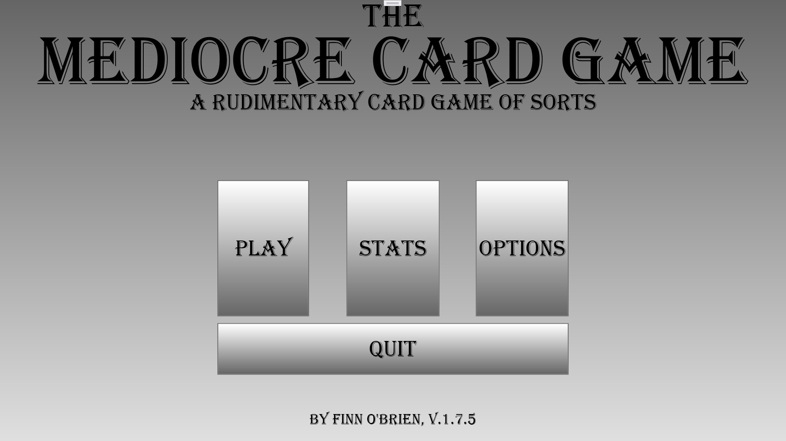
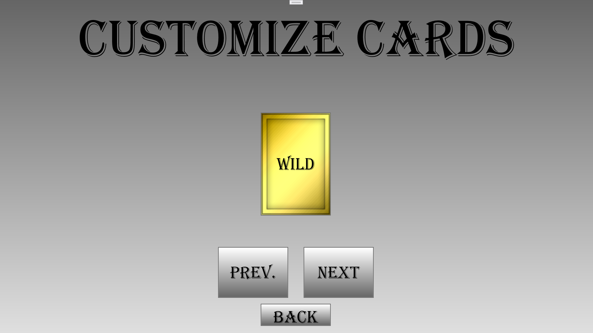
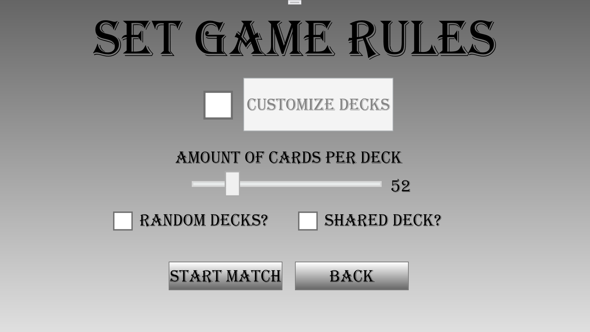
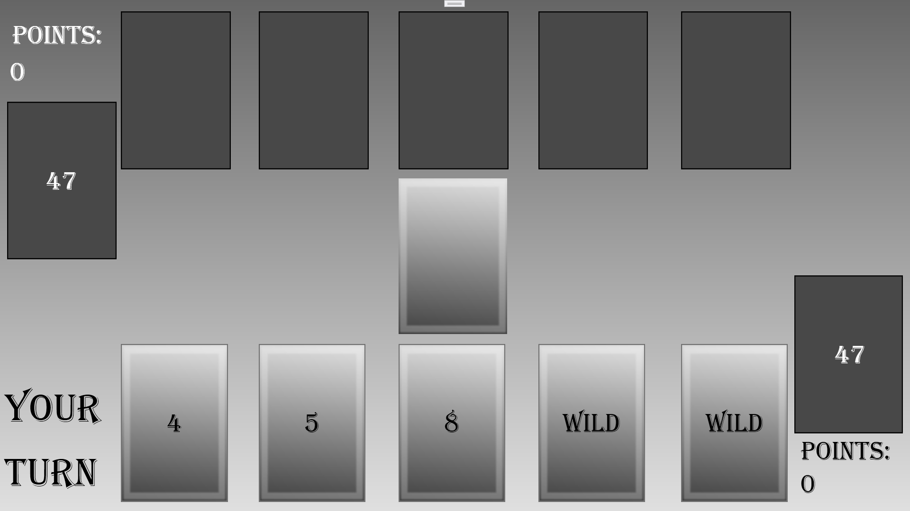

I am Finn O'Brien. I am currently enrolled in my second year of EVIT's Computer programming and mobile app design course.
I enjoy programming, playing video games, as well as working with electronics and hardware.
I have basic fundamental knowledge of C# and Python. I have made quite a few projects using these languages,
ranging from basic command-line applications to full-fledged graphical projects with working graphical user interfaces.
I really enjoy making applications using the WPF and Windows Forms application formats.
I am really excited to learn HTML, as having even a basic understanding of how websites work will be incredibly useful.
I am currently working on making improvements to an existing project I created, Titled "The Mediocre Card Game". The game has seen many improvements since I presented it as an assignment for my EVIT class, and I plan on improving it further as time goes on. The project files can be downloaded from the github repository here.
   